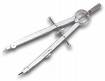
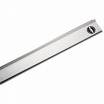
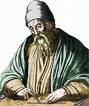

The word construction in geometry has a very specific meaning: the drawing of geometric items such as lines and circles using only compasses and straightedge or ruler. Very importantly, you are not allowed to measure angles with a protractor, or measure lengths with a ruler.

Compasses are a drawing instrument used for drawing circles and arcs. It has two legs, one with a point and the other with a pencil or lead. You can adjust the distance between the point and the pencil and that setting will remain until you change it.This kind of compass has nothing to do with the kind used find the north direction when you are lost. A compass used to find the north direction is usually referred to in the singular - a compass. The kind we are talking about here is usually referred to in the plural - compasses. This plural reference is similar to the way we talk about scissors - with an 's' on the end.

A straightedge is simply a guide for the pencil when drawing straight lines. In most cases you will use a ruler for this, since it is the most likely to be available, but you must not use the markings on the ruler during constructions. If possible, turn the ruler over so you cannot see them.

The Greeks formulated much of what we think of as geometry over 2000 years ago. In particular, the mathematician Euclid documented it in his book titled "Elements", which is still regarded as an authoritative geometry reference. In that work, he uses these construction techniques extensively, and so they have become a part of the geometry field of study. They also provide insight into geometric concepts and give us tools to draw things when direct measurement is not appropriate.
Why didn't Euclid just measure things with a ruler and calculate lengths? For example, one of the basic constructions is
bisecting a line (dividing it into two equal parts). Why not just measure it with a ruler and divide by two?
One theory is the the Greeks could not easily do arithmetic. They had only whole numbers, no zero, and no negative numbers.
This meant they could not for example divide 5 by 2 and get 2.5, because 2.5 is not a whole number - the only kind they had.
Also, their numbers did not use a positional system like ours, with units, tens , hundreds etc, but more like the Roman numerals.
In short, it was quite difficult to do useful arithmetic.
So, faced with the problem of finding the midpoint of a line, it was very difficult to do the obvious - measure it and divide by two.
This led to the constructions using compass and straightedge or ruler.
It is also why the straightedge has no markings. It is definitely not a graduated ruler, but simply a pencil guide for making straight lines.
Euclid and the Greeks solved problems graphically, by drawing shapes instead of using arithmetic.